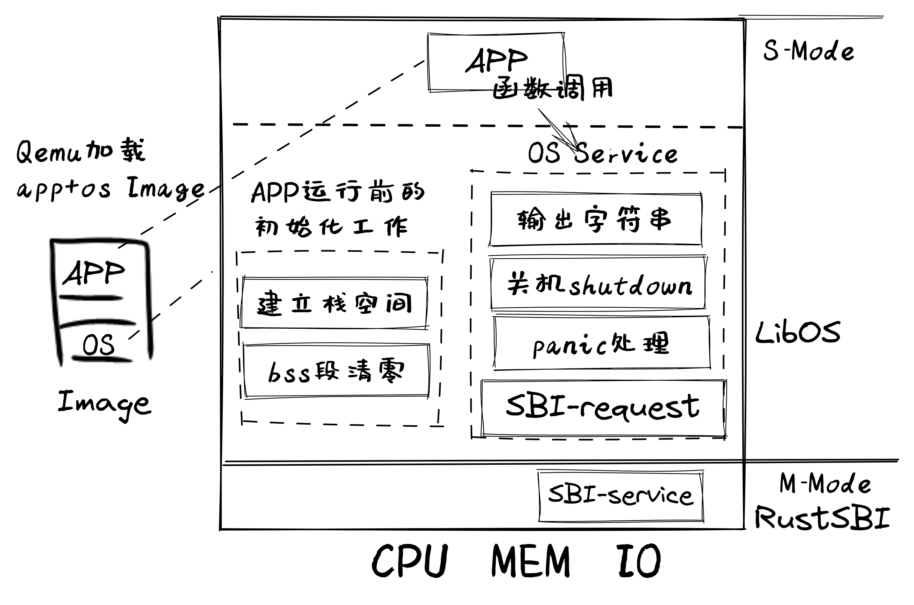

引言#
本章导读#
本章展现了操作系统的一个基本目标：让应用与硬件隔离，简化了应用访问硬件的难度和复杂性。这也是远古操作系统雏形和现代的一些简单嵌入式操作系统的主要功能。具有这样功能的操作系统形态就是一个函数库，可以被应用访问，并通过函数库的函数来访问硬件。
大多数程序员的第一行代码都从 Hello, world! 开始，当我们满怀着好奇心在编辑器内键入仅仅数个字节，再经过几行命令编译（靠的是编译器）、运行（靠的是操作系统），终于在黑洞洞的终端窗口中看到期望中的结果的时候，一扇通往编程世界的大门已经打开。在本章第一节 应用程序执行环境与平台支持 中，可以看到用Rust语言编写的非常简单的“Hello, world”应用程序是如何被进一步拆解和分析的。
不过我们能够隐约意识到编程工作能够如此方便简洁并不是理所当然的，实际上有着多层硬件和软件工具和支撑环境隐藏在它背后，才让我们不必付出那么多努力就能够创造出功能强大的应用程序。生成应用程序二进制执行代码所依赖的是以 编译器 为主的 开发环境 ；运行应用程序执行码所依赖的是以 操作系统 为主的 执行环境 。
本章主要是讲解如何设计和实现建立在裸机上的执行环境，并让应用程序能够在这样的执行环境中运行。从而让同学能够对应用程序和它所依赖的执行环境有一个全面和深入的理解。
本章的目标仍然只是让应用程序输出 Hello, world! 字符串，但这一次，我们将离开舒适区，基于一个几乎空无一物的硬件平台从零开始搭建我们自己的软件高楼大厦，而不是仅仅通过一行语句就完成任务。所以，在接下来的内容中，我们将描述如何让 Hello, world! 应用程序逐步脱离对编译器、运行时库和操作系统的现有复杂依赖，最终以最小的依赖需求能在裸机上运行。这时，我们也可把这个能在裸机上运行的 Hello, world! 应用程序所依赖的软件库称为一种支持输出字符串的非常初级的寒武纪“三叶虫”操作系统 – LibOS。LibOS其实就是一个给应用提供各种服务（比如输出字符串）的库，方便了单一应用程序在裸机上的开发与运行。输出字符串的功能好比是三叶虫的眼睛功能，有了它，我们就有了对软件的最基本的动态分析与调试功能，即通过在代码中的不同位置插入特定内容的输出语句来实现对应用程序和操作系统运行状态的分析与调试。
注解
最早的操作系统雏形是计算工资单的程序库
操作系统需要给程序员提供支持：高效便捷地开发应用和执行应用。远古时期的计算机硬件昂贵笨重，能力弱，单靠硬件还不能高效地执行应用，能够减少程序员的开发成本就已经很不错了。
程序库一般由一些子程序（函数）组成。通过调用程序库中的子程序，应用程序可以更加方便的实现其应用功能。但在早期的软件开发中，还缺少便捷有效的子程序调用机制。
根据维基百科的操作系统时间线 1 上的记录，1949-1951 年，英国 J. Lyons and Co. 公司（一家包括连锁餐厅和食品制造的大型集团公司）开创性地引入并使用剑桥大学的 EDSAC 计算机，联合设计实现了 LEO I ‘Lyons Electronic Office’ 软硬件系统，利用计算机的高速度(按当时的标准)来高效地计算薪资，以及组织蛋糕和其他易腐烂的商品的分配等。这样计算机就成为了一个高效的专用事务处理系统。但软件开发还是一个很困难的事情，需要减少软件编程人员的开发负担。而通过函数库来重用软件功能并简化应用的编程是当时自然的想法。但在软件编程中，由于硬件的局限性（缺少索引寄存器、保存函数返回地址的寄存器、栈寄存器、硬件栈等），早期的程序员不得不使用在程序中修改自身代码的方式来访问数组或调用函数。从现在的视角看来，这样具有自修改能力的程序是一种黑科技。
参与 EDSAC 项目的 David Wheeler 发明了子程序的概念 – Wheeler Jump 。Wheeler 的方法是在子程序的最后一行添加 “jump to this address” 指令，并在指令后跟一个内存空间，这个内存空间通常被设置为 0，在子程序被调用后，这个内存空间的值会被修改为返回地址。当调用子程序时，调用者（Caller）的地址将被放置在累加寄存器中，然后代码将跳转到子程序的入口。子程序的第一条指令将根据累加寄存器中的值计算返回地址，通常是调用指令的下一条指令所在的内存位置，然后将计算出的返回地址写入先前预留的内存空间中。当子程序继续执行，自然会到达子程序的末尾，即 “jump to this address” 指令处，这条指令读取位于它之后的内存单元，获得返回地址，就可以正常返回了。
在有了便捷有效的子程序概念和子程序调用机制后，软件开发人员在 EDSAC 计算机开发了大量的子程序库，其中就包括了检查计算机系统，加载应用软件，写数据到持久性存储设备中，打印数据等硬件系统相关功能的系统子程序库。这样程序员就可以方便开发应用程序来使用计算机了。这也是为何维基百科的的操作系统时间线 1 一文中，把 LEO I ‘Lyons Electronic Office’ 软件系统（其实就是硬件系统相关的子程序库）定位为最早（1951 年）的操作系统的起因。这样的计算机系统只支持一个应用的运行，可以称为专用计算机系统。1951 年 9 月 5 日，计算机首次执行了一个名为 Bakeries Valuations 的应用程序，并在后续承担计算工资单这一必须按时执行的任务，因为必须向员工按时支付周薪。计算员工薪酬的任务需要一位经验丰富的文员 8 分钟内完成，而 LEO I 在 1.5 秒内完成了这项工作，快了 320 倍，这在当时英国社会上引起了轰动。
即使到了现在，以子程序库形式存在的简单嵌入式操作系统大量存在，运行在很多基于微控制单元（Microcontroller Unit，简称 MCU）的单片机中，并支持简单应用甚至是单一应用，在智能仪表、玩具、游戏机、小家电等领域广泛存在。
实践体验#
本章设计实现了一个支持显示字符串应用的简单操作系统–“三叶虫”操作系统 – LibOS，它的形态就是一个函数库，给应用程序提供了显示字符串的函数。
获取本章代码：
$ git clone https://github.com/rcore-os/rCore-Tutorial-v3.git
$ cd rCore-Tutorial-v3
$ git checkout ch1
在 Qemu 模拟器上运行本章代码，看看一个小应用程序是如何在Qemu模拟的计算机上运行的：
$ cd os
$ LOG=TRACE make run
LOG=TRACE 是指定 LOG 的级别为 TRACE，可以查看重要程度不低于 TRACE 的输出日志。目前 TRACE 的重要程度最低，因此这样能够看到全部日志。
如果顺利的话，以 Qemu 平台为例，将输出：
[RustSBI output]
[rustsbi] RustSBI version 0.3.1, adapting to RISC-V SBI v1.0.0
.______ __ __ _______.___________. _______..______ __
| _ \ | | | | / | | / || _ \ | |
| |_) | | | | | | (----`---| |----`| (----`| |_) || |
| / | | | | \ \ | | \ \ | _ < | |
| |\ \----.| `--' |.----) | | | .----) | | |_) || |
| _| `._____| \______/ |_______/ |__| |_______/ |______/ |__|
[rustsbi] Implementation : RustSBI-QEMU Version 0.2.0-alpha.2
[rustsbi] Platform Name : riscv-virtio,qemu
[rustsbi] Platform SMP : 1
[rustsbi] Platform Memory : 0x80000000..0x88000000
[rustsbi] Boot HART : 0
[rustsbi] Device Tree Region : 0x87000000..0x87000ef2
[rustsbi] Firmware Address : 0x80000000
[rustsbi] Supervisor Address : 0x80200000
[rustsbi] pmp01: 0x00000000..0x80000000 (-wr)
[rustsbi] pmp02: 0x80000000..0x80200000 (---)
[rustsbi] pmp03: 0x80200000..0x88000000 (xwr)
[rustsbi] pmp04: 0x88000000..0x00000000 (-wr)
[kernel] Hello, world!
[TRACE] [kernel] .text [0x80200000, 0x80203000)
[DEBUG] [kernel] .rodata [0x80203000, 0x80205000)
[ INFO] [kernel] .data [0x80205000, 0x80206000)
[ WARN] [kernel] boot_stack top=bottom=0x80216000, lower_bound=0x80206000
[ERROR] [kernel] .bss [0x80216000, 0x80217000)
Hello, world! 前后有一些额外的动态运行信息，最后是一系列 kernel 的输出日志。
本章代码树#
三叶虫LibOS操作系统的总体结构如下图所示：
{kind=link}
通过上图，大致可以看出Qemu把包含app和三叶虫LibOS的image镜像加载到内存中，RustSBI（bootloader）完成基本的硬件初始化后，跳转到三叶虫LibOS起始位置，三叶虫LibOS首先进行app执行前的初始化工作，即建立栈空间和清零bss段，然后跳转到app去执行。app在执行过程中，会通过函数调用的方式得到三叶虫LibOS提供的OS服务，如输出字符串等，避免了app与硬件直接交互的繁琐过程。
注: 图中的S-Mode和M-Mode是RISC-V 处理器架构中的两种特权级别。S-Mode 指的是 Supervisor 模式，是操作系统使用的特权级别，可执行特权指令等。M-Mode是 Machine模式，其特权级别比S-Mode还高，可以访问RISC-V处理器中的所有系统资源。关于特权级的进一步描述可以看第二章的 特权级机制 中的详细说明。
位于 ch1 分支上的三叶虫LibOS操作系统的源代码如下所示：
./os/src
Rust 4 Files 119 Lines
Assembly 1 Files 11 Lines
├── bootloader(内核依赖的运行在 M 特权级的 SBI 实现，本项目中我们使用 RustSBI)
│ └── rustsbi-qemu.bin(可运行在 qemu 虚拟机上的预编译二进制版本)
├── LICENSE
├── os(我们的内核实现放在 os 目录下)
│ ├── Cargo.toml(内核实现的一些配置文件)
│ ├── Makefile
│ └── src(所有内核的源代码放在 os/src 目录下)
│ ├── console.rs(将打印字符的 SBI 接口进一步封装实现更加强大的格式化输出)
│ ├── entry.asm(设置内核执行环境的的一段汇编代码)
│ ├── lang_items.rs(需要我们提供给 Rust 编译器的一些语义项，目前包含内核 panic 时的处理逻辑)
│ ├── linker-qemu.ld(控制内核内存布局的链接脚本以使内核运行在 qemu 虚拟机上)
│ ├── main.rs(内核主函数)
│ └── sbi.rs(调用底层 SBI 实现提供的 SBI 接口)
├── README.md
└── rust-toolchain(控制整个项目的工具链版本)
注解
附录 C：深入机器模式：RustSBI 中可以找到关于 RustSBI 的更多信息。
本章代码导读#
LibOS操作系统虽然是软件，但它不是运行在通用操作系统（如Linux）上的一般应用软件，而是运行在裸机执行环境中的系统软件。如果采用通常的应用编程方法和编译手段，无法开发出这样的操作系统。其中一个重要的原因是：编译器（Rust 编译器和 C 编译器等）编译出的应用软件在缺省情况下是要链接标准库，而标准库是依赖于操作系统（如 Linux、Windows 等）的，但LibOS操作系统不依赖其他操作系统。所以，本章主要是让同学能够脱离常规应用软件开发的思路，理解如何开发没有操作系统支持的操作系统内核。
为了做到这一步，首先需要写出不需要标准库的软件并通过编译。为此，先把一般应用所需要的标准库的组件给去掉，这会导致编译失败。然后再逐步添加不需要操作系统的极少的运行时支持代码，让编译器能够正常编译出不需要标准库的正常程序。但此时的程序没有显示输出，更没有输入等，但可以正常通过编译，这样就打下 可正常编译OS 的前期开发基础。具体可看 移除标准库依赖 一节的内容。
LibOS内核主要在 Qemu 模拟器上运行，它可以模拟一台 64 位 RISC-V 计算机。为了让LibOS内核能够正确对接到 Qemu 模拟器上，需要了解 Qemu 模拟器的启动流程，还需要一些程序内存布局和编译流程（特别是链接）相关知识，这样才能将LibOS内核加载到正确的内存位置上，并使得它能够在 Qemu 上正常运行。为了确认内核被加载到正确的内存位置，我们会在LibOS内核中手写一条汇编指令，并使用 GDB 工具监控 Qemu 的执行流程确认这条指令被正确执行。具体可以参考 内核第一条指令（基础篇） 和 内核第一条指令（实践篇） 两节。
我们想用 Rust 语言来实现内核的大多数功能，因此我们需要进一步将控制权从第一条指令转交给 Rust 入口函数。在 Rust 代码中，函数调用是不可或缺的基本控制流，为了使得函数调用能够正常进行，我们在跳转到 Rust 入口函数前还需要进行栈的初始化工作。为此我们详细介绍了函数调用和栈的相关背景知识，具体内容可参考 为内核支持函数调用 一节。最终，我们调用软件栈中相比内核更低一层的软件——也即 RustSBI 提供的服务来实现格式化输出和遇到致命错误时的关机功能，形成了LibOS的核心功能，详情参考 基于 SBI 服务完成输出和关机 一节。至此，应用程序可以直接调用LibOS提供的字符串输出函数或关机函数，达到让应用与硬件隔离的操作系统目标。